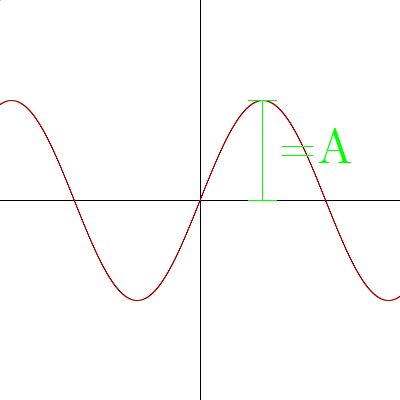
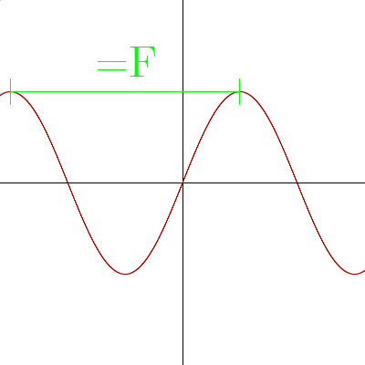

Topics:
- Why Learn Music Theory?
- Hearing & Listening
- Pitch & Sine Waves
- The 13 Intervals of Western Music
- Chords (Triads)
- Scales
- Chord Progressions
- Bonus: Modes
- Bonus: How Do We Tune Our Instruments?
- Music as a language
- Communication with musicians/composers
- Writing/Understanding music
- Music appreciation
- Playing instruments
- Learning is fun/interesting 🤔
Prescriptive:
"relating to the imposition or enforcement of a rule or method."
Descriptive:
"serving or seeking to describe."
Adam Neely: "Why you should learn music theory (Prescriptivism vs Descriptivism)"
http://www.youtube.com/watch?v=49alQj7c5ps
My opinion:
Music theory aims to describe what artists do. It is a very useful tool for analyzing & understanding music, as well as providing a reliable foundation for composing music. Ultimately, regardless of what music theory says, your ears are the final judge.
Hearing:
The physiological process of converting sound waves to a stimulus in the brain.
Listening:
The conscious process of allocating attention to what one hears, and analyzing/understanding that stimulus.
Takeaway:
What you hear and how you listen affects your subjective experience of music. Emotional and physical context come together with other factors to contirbute to what you listen to and hear.
Sin(t)
Amplitude [A Sin(t)]

Amplitude ∝ Volume (The larger the amplitude, the louder)
Frequency [Sin(Ft)]

F = Frequency in hertz (repeats per second)
Frequency ∝ Pitch (The higher the frequency, the higher the pitch)
The 13 Intervals of Western Music™